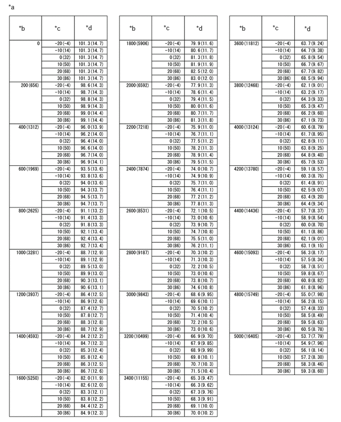

| Last Modified: 10-07-2025 | 6.11:8.1.0 | Doc ID: RM100000002KD51 |
| Model Year Start: 2024 | Model: Tacoma HV | Prod Date Range: [03/2024 - ] |
| Title: T24A-FTS (ENGINE CONTROL): SFI SYSTEM (for 1Motor-HEV Model): P006900; Manifold Absolute Pressure - Barometric Pressure Correlation; 2024 - 2026 MY Tacoma HV [03/2024 - ] | ||
|
DTC |
P006900 |
Manifold Absolute Pressure - Barometric Pressure Correlation |
DESCRIPTION
The manifold absolute pressure sensor installed to the intake manifold detects the intake manifold pressure using a built-in No. 1 turbo pressure sensor.
An atmospheric pressure sensor is built into the ECM. When the engine is stopped, the value of the manifold absolute pressure sensor and atmospheric pressure sensor will be approximately the same as the atmospheric pressure.
|
DTC No. |
Detection Item |
DTC Detection Condition |
Trouble Area |
MIL |
DTC Output from |
Priority |
Note |
|---|---|---|---|---|---|---|---|
|
P006900 |
Manifold Absolute Pressure - Barometric Pressure Correlation |
Difference between atmospheric pressure value of the absolute pressure sensor and atmospheric pressure sensor is higher than threshold value (2 trip detection logic). |
|
Comes on |
Engine |
B |
|
MONITOR DESCRIPTION
Approximately 50 minutes after the ignition switch is turned off, the soak timer is activated and the values of the manifold absolute pressure sensor and atmospheric pressure sensor are compared. If the difference between the values of the manifold absolute pressure sensor and atmospheric pressure sensor is higher than a threshold value in consecutive driving cycles, the ECM will store this DTC.
MONITOR STRATEGY
|
Related DTCs |
P0069: Manifold absolute pressure sensor/Atmospheric pressure sensor correlation |
|
Required Sensors/Components (Main) |
Manifold absolute pressure sensor (No. 1 turbo pressure sensor) ECM |
|
Required Sensors/Components (Related) |
Mass air flow meter sub-assembly Engine coolant temperature sensor |
|
Frequency of Operation |
Once per driving cycle |
|
Duration |
3 times |
|
MIL Operation |
2 driving cycles |
|
Sequence of Operation |
None |
TYPICAL ENABLING CONDITIONS
|
All of the following conditions are met |
- |
|
Engine coolant temperature |
-10°C (14°F) or higher |
|
Intake air temperature |
-10°C (14°F) or higher |
|
Atmospheric pressure sensor circuit fail (P2228, P2229) |
Not detected |
|
Manifold absolute pressure sensor circuit fail (P0107, P0108) |
Not detected |
|
Engine coolant temperature sensor circuit fail (P0117, P0118) |
Not detected |
|
Intake air temperature sensor circuit fail (P0112, P0113) |
Not detected |
|
Engine |
Stall |
|
Ignition switch |
Off |
|
Soak time |
50 minutes |
|
Time after ECM power on |
60 to 65.625 seconds |
|
Auxiliary battery voltage |
8 V or higher |
TYPICAL MALFUNCTION THRESHOLDS
|
Atmospheric pressure and manifold absolute pressure deviation |
Higher than 15.297 kPa (2.218 psi) |
CONFIRMATION DRIVING PATTERN
HINT:
- After repair has been completed, clear the DTC
and then check that the vehicle has returned to
normal by performing the following All Readiness
check procedure.
Click here
![2024 - 2026 MY Tacoma HV [03/2024 - ]; T24A-FTS (ENGINE CONTROL): SFI SYSTEM (for 1Motor-HEV Model): DIAGNOSIS SYSTEM](../../../../stylegraphics/info.gif)
- When clearing the permanent DTCs, refer to the
"CLEAR PERMANENT DTC" procedure.
Click here
- Clear the DTCs (even if no DTCs are stored, perform the clear DTC procedure).
- Turn the ignition switch off and wait for at least 55 minutes [A].
- Turn the ignition switch to ON [B].
- Enter the following menus: Powertrain / Engine / Trouble Codes [C].
- Read the pending DTCs.
HINT:
- If a pending DTC is output, the system is malfunctioning.
- If a pending DTC is not output, perform the following procedure.
- Enter the following menus: Powertrain / Engine / Utility / All Readiness.
- Input the DTC: P006900.
- Check the DTC judgment result.
HINT:
- If the judgment result shows NORMAL, the system is normal.
- If the judgment result shows ABNORMAL, the system is malfunctioning.
- [A] to [C]: Normal judgment procedure.
The normal judgment procedure is used to complete DTC judgment and also used when clearing permanent DTCs.
- When clearing the permanent DTCs, do not disconnect the cable from the auxiliary battery terminal or attempt to clear the DTCs during this procedure, as doing so will clear the universal trip and normal judgment histories.
CAUTION / NOTICE / HINT
NOTICE:
- Vehicle Control History may be stored in the
hybrid vehicle control ECU assembly if the engine is
malfunctioning. Certain vehicle condition information
is recorded when Vehicle Control History is stored.
Reading the vehicle conditions recorded in both the
freeze frame data and Vehicle Control History can be
useful for troubleshooting.
(Select Powertrain in Health Check and then check the time stamp data.)
- If any "Engine Malfunction" Vehicle Control History item has been stored in the hybrid vehicle control ECU assembly, make sure to clear it. However, as all Vehicle Control History items are cleared simultaneously, if any Vehicle Control History items other than "Engine Malfunction" are stored, make sure to perform any troubleshooting for them before clearing Vehicle Control History.
PROCEDURE
PROCEDURE
|
1. |
CHECK ANY OTHER DTCS OUTPUT (IN ADDITION TO DTC P006900) |
(a) Read the DTCs.
Powertrain > Engine > Trouble Codes
|
Result |
Proceed to |
|---|---|
|
P006900 and other DTCs are output |
A |
|
P006900 is output |
B |
HINT:
If any DTCs other than P006900 are output, troubleshoot those DTCs first.
| A |  |
GO TO DTC CHART |
| B | |
|
2. |
READ VALUE USING GTS (INTAKE MANIFOLD ABSOLUTE PRESSURE) |
Pre-procedure1
(a) Turn the ignition switch off and wait for at least 50 minutes.
Procedure1
(b) Using the following table, determine the normal atmospheric pressure for the current altitude and temperature.
|
*a |
Altitude, Temperature and Atmospheric Pressure Correlation Table |
*b |
Altitude (m (ft.)) |
|
*c |
Temperature (°C (°F)) |
*d |
Atmospheric Pressure (kPa (psi)) |
HINT:
- Standard atmospheric pressure is approximately 101 kPa(abs) [15 psi(abs)].
- For every 100 m (328 ft.) increase in altitude, atmospheric pressure drops by approximately 1 kPa (0.1 psi). This varies depending on the weather.
(c) Compare the value of the Data List item Intake Manifold Absolute Pressure with the actual atmospheric pressure.
Powertrain > Engine > Data List
|
Tester Display |
|---|
|
Intake Manifold Absolute Pressure |
|
Result |
Proceed to |
|---|---|
|
Approximately the same as the actual atmospheric pressure |
A |
|
Not approximately the same as the actual atmospheric pressure |
B |
Post-procedure1
(d) None
| B | |
REPLACE MANIFOLD ABSOLUTE PRESSURE SENSOR (NO. 1 TURBO PRESSURE SENSOR) |
|

|
3. |
READ VALUE USING GTS (ATMOSPHERIC PRESSURE) |
(a) Using the following table, determine the normal atmospheric pressure for the current altitude and temperature.
|
*a |
Altitude, Temperature and Atmospheric Pressure Correlation Table |
*b |
Altitude (m (ft.)) |
|
*c |
Temperature (°C (°F)) |
*d |
Atmospheric Pressure (kPa (psi)) |
HINT:
- Standard atmospheric pressure is approximately 101 kPa(abs) [15 psi(abs)].
- For every 100 m (328 ft.) increase in altitude, atmospheric pressure drops by approximately 1 kPa (0.1 psi). This varies depending on the weather.
(b) Compare the value of the Data List item Atmospheric Pressure with the actual atmospheric pressure.
Powertrain > Engine > Data List
|
Tester Display |
|---|
|
Atmospheric Pressure |
|
Result |
Proceed to |
|---|---|
|
Approximately the same as the actual atmospheric pressure |
A |
|
Not approximately the same as the actual atmospheric pressure |
B |
| A | |
| B | |